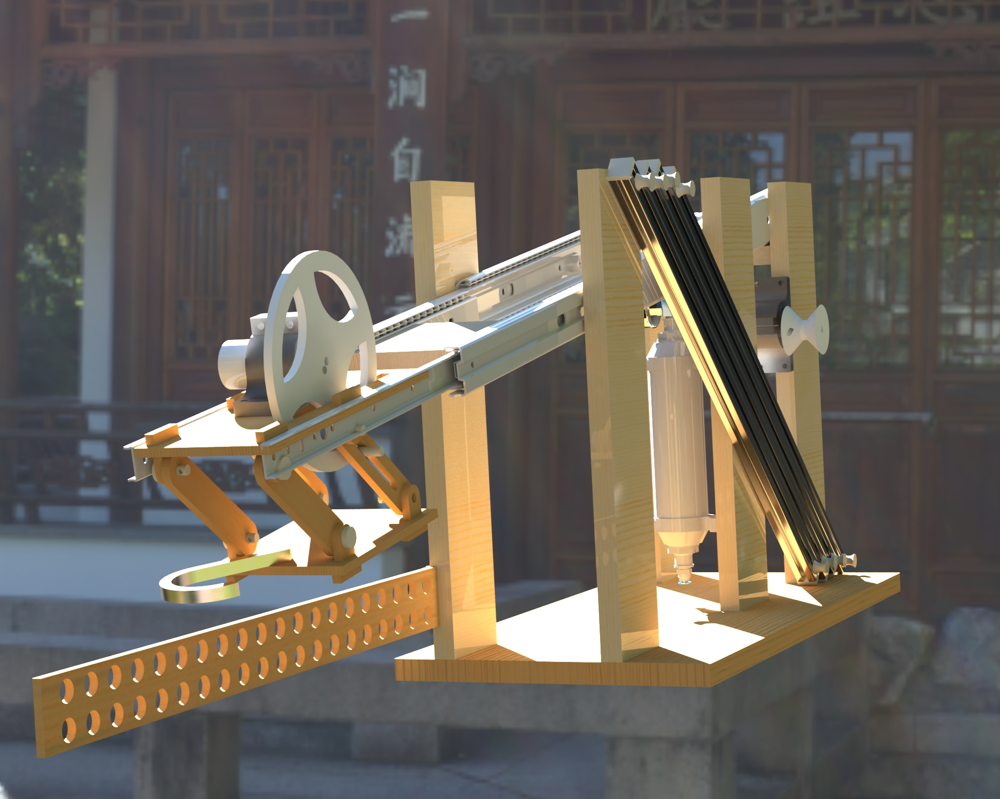

|
← Back to selected projects
Skadooshinator - ME 2110 Major Design Project
ME 2110 - Creative Decisions and Design · Georgia Tech · Spring 2024

Team project (Skadoosh Squadron)
Mechanism design · Pneumatics · Arduino control
Design process: QFD · morph charts · FMEA
For Georgia Tech's ME 2110 major design project, our team designed the
Skadooshinator, an autonomous machine that helps Po defend the
Valley of Peace on a Kung Fu Panda-themed competition field.
Within strict constraints on cost, footprint, and 40-second run time, the
system raises Po to the Jade Palace courtyard, retrieves the Dragon Scroll,
and knocks down Tai Lung while protecting bunny villagers to maximize
competition score.
Problem & Constraints
The robot needed to execute several tasks: lift Po above three feet and into
the courtyard, retrieve the correct Dragon Scroll from a rotating centerpiece,
manage Tai Lung and the bunny villager, and satisfy home-zone objectives, all
while constrained to a 12" x 24" x 18" envelope, banana-plug activation,
standardized actuators, and a 40-second autonomous run.
Competition layout and House of Quality used to prioritize reliability,
autonomy, and high point-scoring tasks.
Design Overview
Guided by a House of Quality, specification sheet, function tree, and
morphological chart, the team evaluated five concepts and selected the
Skadooshinator as the highest-scoring design in the evaluation matrix.
The final machine concentrates on high-value, reliable mechanisms—Po's lift,
the Dragon Scroll retrieval, and Tai Lung management—rather than low-value,
crowded objectives like baozi collection.
CAD and physical build of the Skadooshinator, highlighting the pneumatic
drawer-slide assembly, Tai Lung arm, Dragon Scroll mechanism, and cascading lift.
Key Mechanisms
The core chassis uses drawer slides driven by a pneumatic cylinder to push a
wooden crossbar toward the centerpiece, simultaneously deploying the
Dragon Scroll and Tai Lung mechanisms.
A laser-cut MDF arm, powered by rubber bands and a mousetrap spring, swings
Tai Lung out of the home zone while keeping the robot safely in bounds.
The Dragon Scroll subsystem is a four-bar linkage with a hooked end that
snags the correct scroll from the rotating centerpiece. An Arduino-controlled
motor drives a cam wheel tied into the linkage, while a rotating limit-switch
mechanism and timing algorithm estimate track speed and cue deployment for
the correct quadrant.
Po's ascent uses a multi-stage cascading lift built from aluminum T-slot
extrusions for stiffness and repeatability. String-coupled stages climb in
sequence, keeping Po suspended rather than dropped, which reduces
interference from competing robots.
Four main mechanisms for scoring points in competition.
Control & Strategy
The control system centers on an Arduino that begins execution when banana
plugs are energized. A potentiometer selects track color; the code maps this
setting to a calibrated timing delay for the Dragon Scroll mechanism so the
hook fires when the correct scroll passes the platform.
This strategy compensates for speed variations between competition tracks and
keeps the routine fully autonomous.
Results
- Selected as the top concept in the evaluation matrix with
296 weighted points across customer requirements.
- Improved from 53rd place after Sprint 3 to 5th overall in the final
competition.
- Achieved a maximum score of 117 points and a standard deviation of
12.85 points across scoring rounds, meeting the reliability target of
< 15-point spread.
- Maintained low cost at approximately $77, well under the $120 budget
constraint.
Reflections
The Skadooshinator emphasized reliability and points per mechanism instead of
doing “everything,” which proved critical to climbing the rankings. Working on
this project sharpened skills in structured design methods, rapid mechanism
iteration, and integrating mechanical systems with pneumatics and embedded
control under tight competition constraints.
|